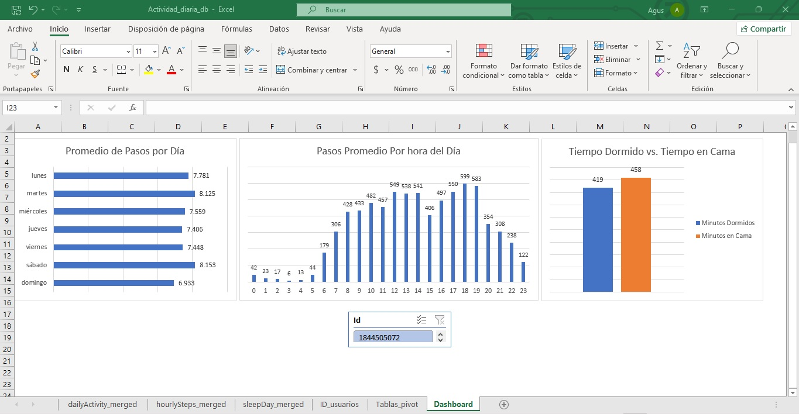

Análisis de Tendencias de Bienestar
Estudio de Caso: Bellabeat
Certificado Profesional de Google Data Analytics
Herramientas: MS Excel (Data Modeling & Power Pivot)
Objetivo de Negocio (Ask): Analizar los datos históricos de uso de dispositivos inteligentes de salud y fitness para identificar tendencias de comportamiento en los consumidores. El objetivo es aplicar estos insights para que los stakeholders clave (Urška Sršen y Sando Mur) puedan diseñar una nueva estrategia de marketing basada en datos para los productos de Bellabeat.
Preparación y Limitaciones de los Datos (Prepare)
Para este análisis, se utilizó el conjunto de datos público "FitBit Fitness Tracker Data" alojado en Kaggle y puesto a disposición por Mobius, el cual incluye el seguimiento a nivel de minutos de 30 usuarios. Se realizó una evaluación de calidad ROCCC identificando las siguientes limitaciones críticas:
- Confiabilidad (Baja/Media): La muestra es pequeña (30 usuarios), limitando la significancia estadística a un nivel exploratorio.
- Originalidad (Baja): Es información de terceros (Third-party data), no datos de origen directo de la empresa.
- Completitud (Baja): El conjunto carece de información demográfica clave. Siendo Bellabeat una marca enfocada en mujeres, no poder filtrar los datos por género introduce un sesgo potencial en el análisis.
Arquitectura de Datos y Power Pivot (Process)
El procesamiento y modelado se ejecutó en Microsoft Excel. Para superar las limitaciones de las funciones de búsqueda tradicionales (como BUSCARV), se implementó un flujo de Inteligencia de Negocios avanzado utilizando Power Pivot. Las acciones técnicas clave incluyeron:
- Limpieza y Estandarización: Auditoría de valores nulos, eliminación de duplicados y uso de la herramienta "Texto en columnas" para delimitar y parsear variables de fecha almacenadas incorrectamente como texto plano.
- Extracción de Entidades (Primary Key): Se aislaron los 33 identificadores únicos de la base de datos para crear una Tabla de Dimensión maestra (
TablaUsuarios).
- Modelado Relacional: Se activó el motor de Power Pivot para construir una base de datos relacional dentro de Excel. Se establecieron relaciones "Uno a Muchos" (1:N) entre la tabla maestra de usuarios y las tablas transaccionales (Actividad diaria, Pasos por hora y Registros de sueño).
Descubrimientos del Modelo de Datos (Analyze & Share)
Gracias a la arquitectura de datos construida, se desarrolló un Dashboard donde un único Segmentador de Datos (Slicer) controla de forma global e interactiva las métricas provenientes de múltiples orígenes de datos distintos:

- Perfil de Actividad Diaria (Análisis Semanal): Aunque la estadística descriptiva general arrojó un promedio de 7,638 pasos y 2,304 calorías al día (por debajo de la meta médica de 10,000 pasos), el Gráfico 1 revela visualmente cómo se distribuye este volumen a lo largo de la semana. Los usuarios alcanzan picos de actividad saludables los martes y sábados, pero caen drásticamente en el sedentarismo los días domingo.
- Tendencias Horarias: Existe una "Meseta Laboral" de actividad moderada entre las 8:00 AM y las 4:00 PM, seguida de un pico máximo de actividad post-laboral entre las 5:00 PM y las 7:00 PM.
- Hábitos y Calidad del Sueño: Los usuarios pasan un promedio de 458 minutos en la cama (aprox. 7.6 horas), pero el tiempo real de descanso es de solo 419 minutos. Esto revela una latencia de sueño de 39 minutos (tiempo de vigilia improductiva en cama).
Estrategia Accionable (Act)
Basándonos en estas métricas empíricas, se proponen las siguientes intervenciones directas en la estrategia de marketing y experiencia de usuario para Bellabeat:
-
CUÁNDO Alertas de "Horario Prime"
Configurar alertas inteligentes o notificaciones push en dispositivos (Leaf/Time) a las 5:30 PM, aprovechando el momento exacto de mayor propensión a la actividad, para motivar a las usuarias a cerrar la brecha hacia la meta de los 10,000 pasos.
-
QUÉ Estrategia de Membresía (Sleep Latency)
Utilizar la brecha improductiva de 39 minutos de latencia de sueño como el dolor central (pain point) para campañas de conversión. Promocionar el contenido premium de la Membresía Bellabeat (mindfulness y sonidos nocturnos) como una solución para optimizar el descanso y reducir la vigilia nocturna.
-
CÓMO Campañas Dinámicas de Fin de Semana
Implementar comunicación segmentada por día para combatir el fuerte declive detectado los domingos:
- Sábado (Celebración): Reconocer el esfuerzo en el día de mayor actividad: "¡Estás on fire este fin de semana! Sigue así."
- Domingo (Motivación Extra): Combatir el desplome de actividad a media mañana: "¡Feliz domingo! Sabemos que es día de descanso, pero un paseo de 20 minutos te ayudará a recargar energías para la semana."